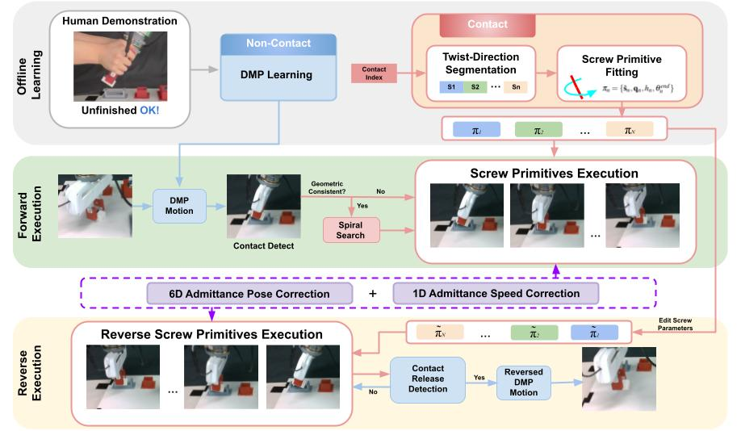
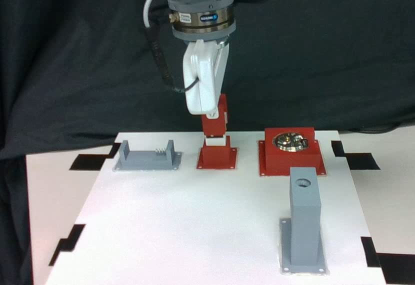
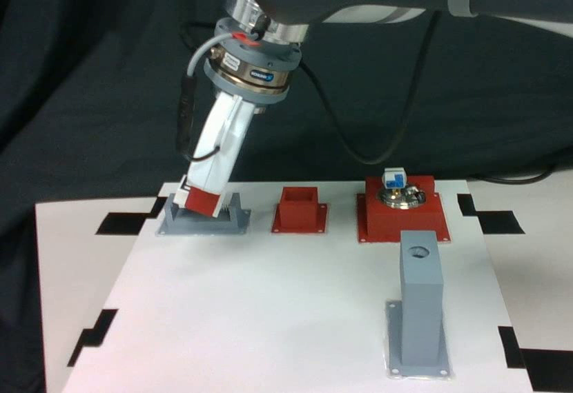
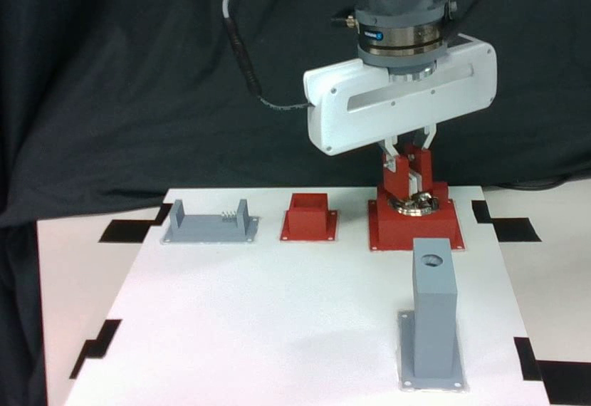
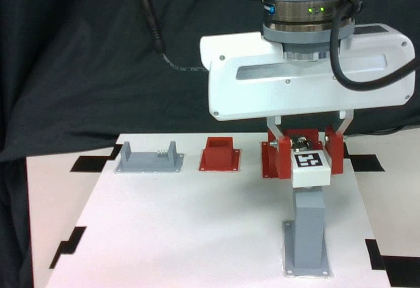

Abstract
Learning from demonstration(LfD) enables robots to learn manipulation skills directly from expert demonstrations but remains challenging for contact-rich tasks involving geometric constraints and force interaction. Existing approaches typically require multiple demonstrations, assume complete task execution, and do not support reverse skill learning. In this paper, we present a unified one-shot learning framework for constrained manipulation that learns both forward and reverse task execution from a single, possibly unfinished demonstration. Our method decomposes demonstrations into non-contact and contact phases, with non-contact motion encoded with dynamic movement primitives (DMP), and contact motion represented as a sequence of screw motion primitives segmented by our proposed geometry-driven twist-direction segmentation algorithm. During execution, screw primitives are executed sequentially under admittance-guided pose correction and speed regulation, enabling task completion learned from unfinished demonstration as well as reverse skill execution without additional learning data. We validate our approach on four constrained contact-rich manipulation tasks -- peg insertion, battery insertion, lock opening and screw driving, demonstrating improved success rate and robustness over one-shot trajectory and segmentation baselines in both forward and reverse settings.
Overview

Overview of the proposed framework. A single forward demonstration is first encoded with a DMP. During execution, the DMP reproduces free-space motion until contact is detected. The contact phase is segmented using the proposed twist-direction method, and each segment is modeled as a screw primitive. Screw primitives are executed sequentially with 6D admittance-based pose correction and 1D admittance-based speed regulation. Reverse execution reuses the learned primitives with edited parameters and reversed order, followed by reversed DMP reproduction after contact release.
Tasks

Peg Insertion

Battery Insertion

Lock Opening

Screw Driving
Human Demonstrations
Experiments
Generalization to Novel Objects
BibTeX
@article{YourPaperKey2024,
title={Your Paper Title Here},
author={First Author and Second Author and Third Author},
journal={Conference/Journal Name},
year={2024},
url={https://your-domain.com/your-project-page}
}